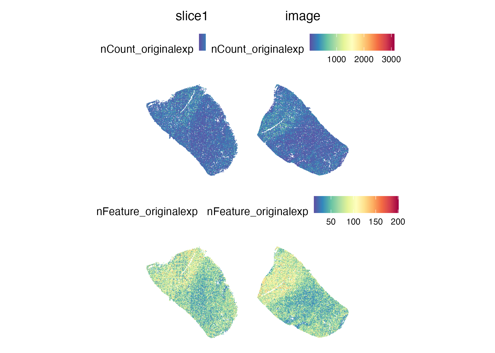
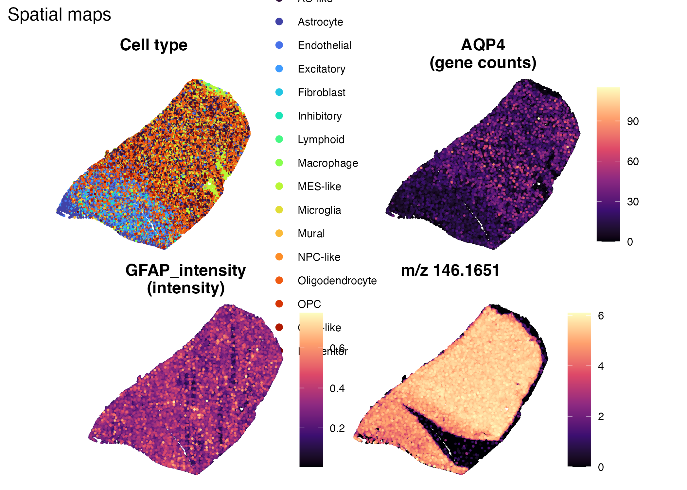
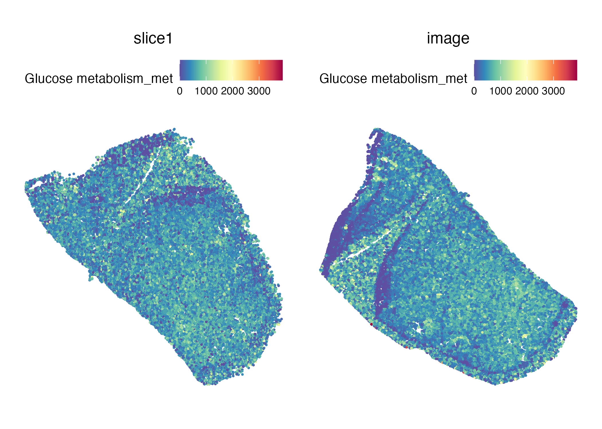
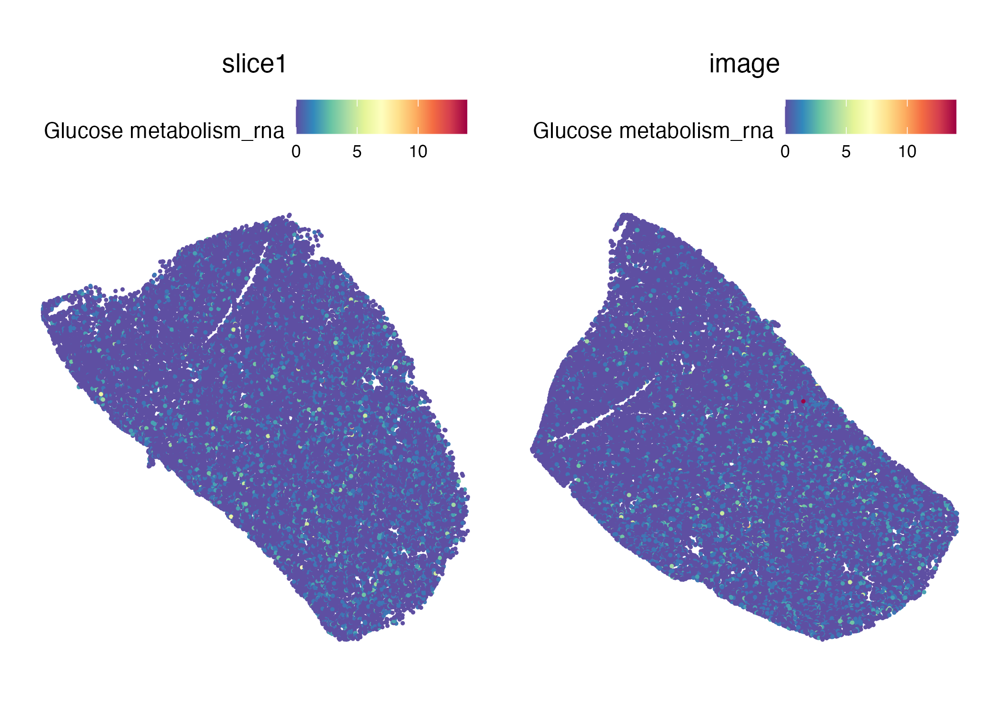
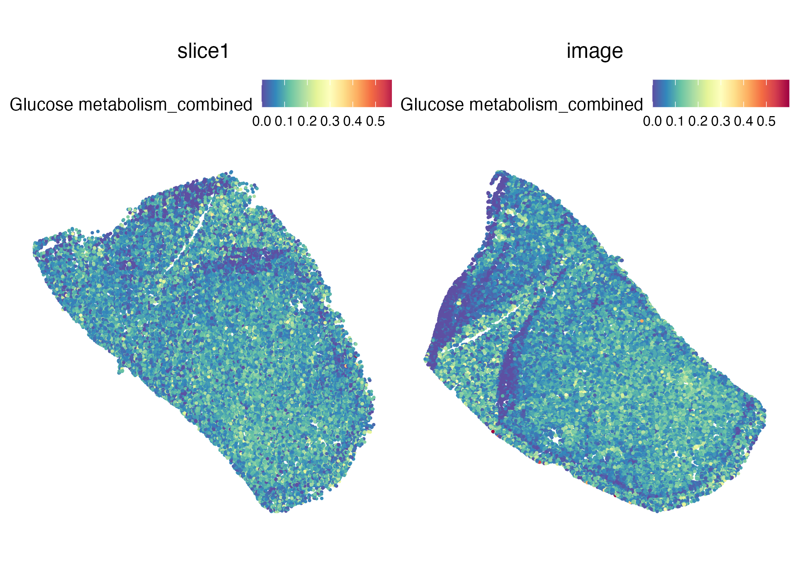
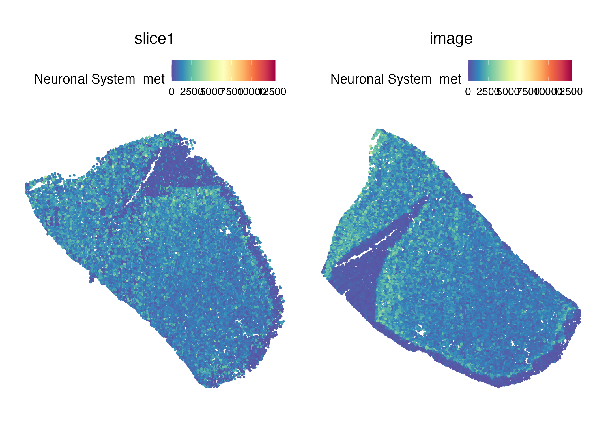
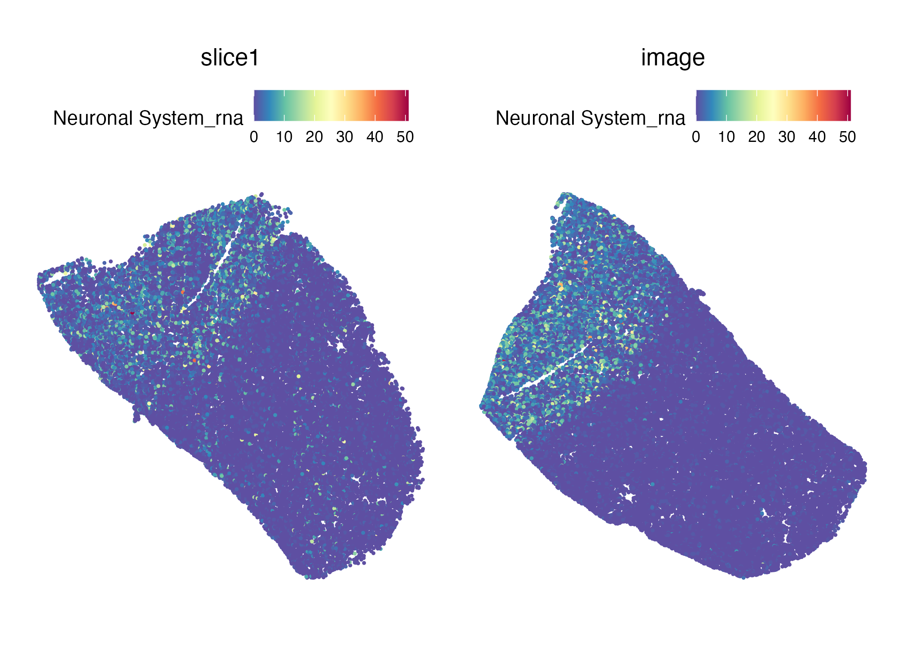
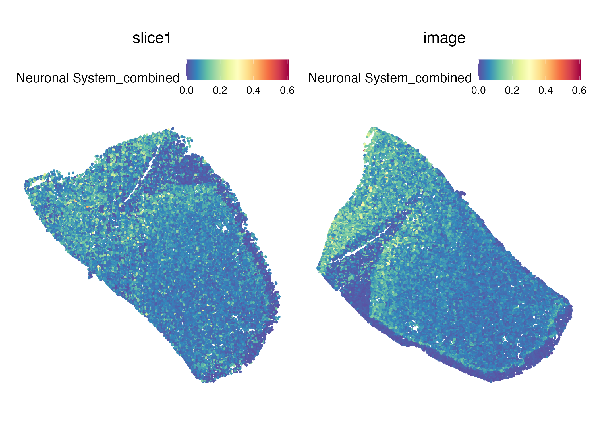

SpaMTP: Human Brain Tissue Analysis
Source:vignettes/human_brain_tissue_analysis.Rmd
human_brain_tissue_analysis.RmdProteomics + Spatial Metabolomics Integration
This tutorial demonstrates how to explore protein intensities alongside spatial metabolomics and transcriptomics within a single SpaMTP object. The dataset is derived from a patient with low-grade glioma (LGG), with tissue curated to retain a clear distinction between the leading edge and tumour regions. The workflow covers QC maps, metabolite annotation, multi-panel spatial plots, and pathway scores that combine metabolite and RNA signals.
Requirements
You will need a SpaMTP object that contains:
-
SPMassay with m/z features. -
SPTassay with gene counts. - Metadata columns for spatial coordinates (
x_centroid,y_centroid). - Optional protein intensity columns (e.g.,
GFAP_intensity).
Update the paths below to match your local files.
Load the integrated object
data_path <- "./vignette_data_files/human_brain_tissue_analysis/brain_tumour_integrated.rds"
pathway_path <- "./vignette_data_files/human_brain_tissue_analysis/brain_tumour_combined_pathways.rds"
stopifnot(file.exists(data_path), file.exists(pathway_path))
data <- readRDS(data_path)
cregpathway <- readRDS(pathway_path)
SpatialFeaturePlot(
data,
features = c("nCount_originalexp", "nFeature_originalexp"),
pt.size.factor = 2
)
Annotate m/z features (optional)
We extract m/z values from the SPM assay and run a basic
annotation lookup.
spm <- data[["SPM"]]
mz_vals <- as.numeric(sub("^mz-", "", rownames(spm)))
spm@meta.features$raw_mz <- mz_vals
data[["SPM"]] <- spm
mz_df <- data.frame(
row_id = seq_along(mz_vals),
mz = mz_vals
)
annoresult <- SpaMTP:::annotateTable(mz_df, db = rbind(HMDB_db, Chebi_db))
head(annoresult)## ID Match observed_mz Reference_mz Error Adduct Formula Exactmass
## M+H.1 1 TRUE 71.07229 71.07241 1.653058 M+H C4H8N 70.06513
## M+H.2 3 TRUE 72.08015 72.08078 8.613587 M+H C4H9N 71.07350
## M+H.3 3 TRUE 72.08015 72.08078 8.613601 M+H C4H9N 71.07350
## M+H.4 3 TRUE 72.08015 72.08078 8.623396 M+H C4H9N 71.07350
## M+H.5 4 TRUE 74.09586 74.09643 7.687876 M+H C4H11N 73.08915
## M+H.6 4 TRUE 74.09586 74.09643 7.687889 M+H C4H11N 73.08915
## Isomers
## M+H.1 CHEBI:36781
## M+H.2 HMDB0031641
## M+H.3 HMDB0243874
## M+H.4 CHEBI:31108; CHEBI:33135
## M+H.5 HMDB0031321; HMDB0032179; HMDB0034198; HMDB0041878
## M+H.6 HMDB0255263
## InchiKeys
## M+H.1 ZVJHJDDKYZXRJI-UHFFFAOYSA-O
## M+H.2 RWRDLPDLKQPQOW-UHFFFAOYSA-N
## M+H.3 UJGVUACWGCQEAO-UHFFFAOYSA-N
## M+H.4 ASVKKRLMJCWVQF-UHFFFAOYSA-N; RWRDLPDLKQPQOW-UHFFFAOYSA-N
## M+H.5 HQABUPZFAYXKJW-UHFFFAOYSA-N; BHRZNVHARXXAHW-UHFFFAOYSA-N; KDSNLYIMUZNERS-UHFFFAOYSA-N; HPNMFZURTQLUMO-UHFFFAOYSA-N
## M+H.6 DAZXVJBJRMWXJP-UHFFFAOYSA-N
## IsomerNames
## M+H.1 1-pyrrolinium
## M+H.2 Pyrrolidine
## M+H.3 1-Ethylaziridine
## M+H.4 3-buten-1-amine; pyrrolidine
## M+H.5 1-Butylamine; sec-Butylamine; 2-Methyl-1-propylamine; Diethylamine
## M+H.6 N,N-DIMETHYLETHYLAMINE
## Isomers_IDs
## M+H.1 chebi:36781
## M+H.2 hmdb:HMDB0031641
## M+H.3 hmdb:HMDB0243874
## M+H.4 chebi:31108; chebi:33135
## M+H.5 hmdb:HMDB0031321; hmdb:HMDB0032179; hmdb:HMDB0034198; hmdb:HMDB0041878
## M+H.6 hmdb:HMDB0255263Multi-panel spatial maps (cell type, gene, protein, metabolite)
Pick a metabolite m/z, a gene, and a protein feature available in your object.
mz_target <- 146.1651
protein_feature <- "GFAP_intensity"
gene_target <- "AQP4"
celltype_col <- "Anno4.1"
x_coord <- data@meta.data[["x_centroid"]]
y_coord <- data@meta.data[["y_centroid"]]
metabo <- data[["SPM"]]@data[which.min(abs(mz_vals - mz_target)), ]
get_gene_counts <- function(obj, gene) {
counts <- obj[["SPT"]]@counts
if (!gene %in% rownames(counts)) {
warning("Gene not found in SPT counts: ", gene)
return(rep(0, ncol(counts)))
}
as.numeric(counts[gene, ])
}
gene_counts <- get_gene_counts(data, gene_target)
prot_vals <- data@meta.data[[protein_feature]]
cell_anno <- data@meta.data[[celltype_col]]
plot_df <- data.frame(
x = x_coord,
y = y_coord,
cell_anno = factor(cell_anno),
gene_counts = gene_counts,
prot_vals = prot_vals,
metabo = metabo
)
num_panel <- function(var, title, low = "lightgrey") {
df_ord <- plot_df[order(plot_df[[var]]), ]
ggplot(df_ord, aes(x, y, colour = .data[[var]])) +
geom_point(size = 0.25) +
coord_equal() +
scale_colour_viridis_c(option = "magma", na.value = low) +
guides(colour = guide_colourbar(barheight = unit(40, "mm"))) +
labs(title = title, colour = NULL) +
theme_void(base_size = 10) +
theme(
legend.key.height = unit(1.1, "cm"),
plot.title = element_text(hjust = 0.5, face = "bold")
)
}
p_cell <- ggplot(plot_df, aes(x, y, colour = cell_anno)) +
geom_point(size = 0.25) +
coord_equal() +
scale_colour_viridis_d(option = "turbo") +
guides(colour = guide_legend(override.aes = list(size = 2))) +
labs(title = "Cell type") +
theme_void(base_size = 10) +
theme(plot.title = element_text(hjust = 0.5, face = "bold"))
p_gene <- num_panel("gene_counts", paste0(gene_target, "\n(gene counts)"))
p_prot <- num_panel("prot_vals", paste0(protein_feature, "\n(intensity)"))
p_met <- num_panel("metabo", paste0("m/z ", mz_target))
(p_cell | p_gene) / (p_prot | p_met) +
plot_annotation(title = "Spatial maps") &
theme(legend.box = "vertical")
Pathway-level metabolite, RNA, and combined scores
We compute pathway scores for selected pathways by binning m/z features and summing leading-edge genes, then combine the two modalities.
min_max <- function(x) {
rng <- range(x, na.rm = TRUE)
if (is.infinite(rng[1]) || rng[1] == rng[2]) {
return(rep(0, length(x)))
}
(x - rng[1]) / (rng[2] - rng[1])
}
sum_genes <- function(obj, genes) {
counts <- obj[["SPT"]]@counts
valid <- intersect(genes, rownames(counts))
if (length(valid) == 0) {
warning("No genes found for pathway in SPT counts")
return(rep(0, ncol(counts)))
}
colSums(counts[valid, , drop = FALSE])
}
score_pathway <- function(obj, pathway_df, pathway_name, type = "wiki", weight = 0.6) {
selected <- pathway_df[
pathway_df$pathwayName == pathway_name & pathway_df$type == type,
]
stopifnot(nrow(selected) > 0)
mzs <- as.numeric(strsplit(gsub("\\[.*?\\]", "", selected$adduct_info[1]), ";")[[1]])
mzs <- unlist(lapply(mzs, function(x) FindNearestMZ(obj, target_mz = x, assay = "SPM")))
obj <- BinMetabolites(
obj,
mzs,
slot = "counts",
bin_name = paste0(pathway_name, "_met"),
assay = "SPM"
)
genes <- strsplit(selected$leadingEdge_genes[1], ";")[[1]]
obj@meta.data[[paste0(pathway_name, "_rna")]] <- sum_genes(obj, genes)
met_norm <- min_max(obj@meta.data[[paste0(pathway_name, "_met")]])
rna_norm <- min_max(obj@meta.data[[paste0(pathway_name, "_rna")]])
obj@meta.data[[paste0(pathway_name, "_combined")]] <-
weight * met_norm + (1 - weight) * rna_norm
list(obj = obj, genes = genes)
}
pathway_name <- "Glucose metabolism"
pathway_type <- "wiki"
res <- score_pathway(data, cregpathway, pathway_name, type = pathway_type)
data <- res$obj
SpatialFeaturePlot(data, features = paste0(pathway_name, "_met"), pt.size.factor = 2.5)
SpatialFeaturePlot(data, features = paste0(pathway_name, "_rna"), pt.size.factor = 2.5)
SpatialFeaturePlot(data, features = paste0(pathway_name, "_combined"), pt.size.factor = 2.5)
pathway_name <- "Neuronal System"
pathway_type <- "Reactome"
res <- score_pathway(data, cregpathway, pathway_name, type = pathway_type)
data <- res$obj
SpatialFeaturePlot(data, features = paste0(pathway_name, "_met"), pt.size.factor = 2.5)
SpatialFeaturePlot(data, features = paste0(pathway_name, "_rna"), pt.size.factor = 2.5)
SpatialFeaturePlot(data, features = paste0(pathway_name, "_combined"), pt.size.factor = 2.5)
Optional: plot immunofluorescence channels
If your metadata includes separate intensity channels and an RGB composite, you can map them as additional spatial panels.
required_cols <- c("GFAP_intensity", "Phalloidin_intensity", "DAPI_intensity", "color")
if (all(required_cols %in% colnames(data@meta.data))) {
parse_rgb <- function(txt) {
vapply(txt, function(s) {
if (is.na(s) || s == "") return(NA_character_)
nums <- as.numeric(strsplit(gsub("[() ]", "", s), ",", fixed = TRUE)[[1]])
if (length(nums) != 3 || any(is.na(nums))) return(NA_character_)
rgb(nums[1], nums[2], nums[3])
}, character(1))
}
rgb_hex <- parse_rgb(data@meta.data[["color"]])
chan_df <- data.frame(
x = x_coord,
y = y_coord,
gfap_if = data@meta.data[["GFAP_intensity"]],
phall_if = data@meta.data[["Phalloidin_intensity"]],
dapi_if = data@meta.data[["DAPI_intensity"]],
rgb_hex = rgb_hex
)
chan_panel <- function(var, title, high_col) {
df_ord <- chan_df[order(chan_df[[var]]), ]
ggplot(df_ord, aes(x, y, colour = .data[[var]])) +
geom_point(size = 0.25) +
coord_equal() +
scale_colour_gradient(
low = "grey90",
high = high_col,
na.value = "grey90",
guide = "colourbar"
) +
guides(colour = guide_colourbar(barheight = unit(38, "mm"))) +
labs(title = title, colour = NULL) +
theme_void(base_size = 10) +
theme(plot.title = element_text(hjust = 0.5, face = "bold"))
}
p_gfap <- chan_panel("gfap_if", "GFAP (IF)", high_col = "chartreuse3")
p_phall <- chan_panel("phall_if", "Phalloidin (IF)", high_col = "mediumorchid")
p_dapi <- chan_panel("dapi_if", "DAPI (IF)", high_col = "dodgerblue3")
p_rgb <- ggplot(chan_df, aes(x, y, colour = rgb_hex)) +
geom_point(size = 0.25) +
coord_equal() +
scale_colour_identity() +
labs(title = "Composite (RGB)") +
theme_void(base_size = 10) +
theme(plot.title = element_text(hjust = 0.5, face = "bold"))
(p_gfap | p_phall) / (p_dapi | p_rgb) +
plot_annotation(title = "Immunofluorescence channels") &
theme(legend.box = "vertical")
} else {
warning("Missing IF columns: ", paste(setdiff(required_cols, colnames(data@meta.data)), collapse = ", "))
}